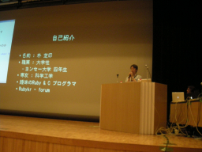

rubyでする Web scrapping - Hpricot と mechanize そして scRubyt （朴 芝印）
- スピーカー
- 朴 芝印 - 延世大学化学工学科, 韓国 ruby-forum - forum.rubykr.org
- プロフィール
- - Ruby好きの大学生。
- Programming Rubyの韓国語版の翻訳。 - 講演時間
- 16：00〜16：30
- 講演者による資料
- page: http://tisphie.net/typo/pages/RubyKaigi2007
PDF: http://tisphie.net/web-scraping.pdf
韓国の方ですが、とても日本語が上手で聞きやすかったです。
緊張しています＾＾
Rubyでやってること
- Rubyで自分のためのユーティリティを書いたりしています。
- Programming Ruby韓国語版の翻訳（拍手）
Web Scrapingて何？
ウェブページ ↓ 何か(←いまここ） ↓ XMLとかテキストとか
作ってみよう！
- open-uri
- 文字列処理
- 正規表現
- read/puts/gets
デモプログラムをirbで実行
- 正規表現でグーグルの検索結果を抽出して出力するプログラム
面倒臭くない？
- 正規表現書いたりするのが面倒臭い
- 特に行が変わったりするときびしい
そこでHpricot
- XPathでHTMLの一部を抽出する
- プログラムはさっきのと同じ結果を返す
Hpricot
- why the lucky stiff 製作
- Pythonの何とかというやつより速かった
XPath
- XMLツリー構造を表現
ここでデモ
doc = Hpricot(html) (doc/"/html/body/div/a").inner_text
みたいに使う
FireBug
- GoogleのHTMLそのままソース表示でみると分かりにくい
- FirefoxでFireBugのInspectにcopy XPath というメニューが
CSS selector
- XPathより短く、読みやすい
doc.search('#menu')
みたいにできるお
HTTPを操る
- open-uri
- 複雑な場合Net::HTTP
- Mechanize
Mechanize
- PerlのWWW::Mechanizeからの影響
- Michael Newman & Aaron Paterson製作
- 内部ではNet::HTTPを利用している
Mechanizeの動作
- HTTP request
- 返事によりredirectなどの処理
- Cookieも処理できる
yahooにログインするサンプルをしてました。
scRUBYt
- Web Extractionのためのライブラリ
- MechanizeとHpricotを利用する
- DSL記法
- 今も活発に開発中
sample
Googleの検索結果を次のページまでみるサンプルを披露しました
でも、サンプルの実行にちょっととまどった
require 'rubygems' require 'scrubyt'
したらできた。
ネット重い…
scRUBYtはDSLからRubyプログラムを生成しているらしいです。
応用
- 2ch掲示板に連続書き込む
…
（爆笑）
よい大人はまねしちゃいけません
まじめなまとめ
- rssがないサイトのrssをつくるスクリプト
- サーチエンジン…（ごめんなさいログ追いつかず）
ライブラリのインストールはGemでおｋ


Keyword(s):
References:[RubyKaigi2007速報ログ]